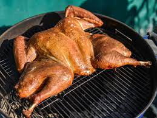

Spatchcocked Butter Roasted Lemon and Herb Turkey with Gravy!!
>
Recipe
This roast turkey recipe is certainly a labor of love!
Spatchcocking a turkey isn't difficult but it takes
a bit of muscle and some guts. I love how evenly poultry cooks
when it has been spatchcocked. The butter mixture is very
delicious and adds a ton of flavor to the turkey.
Perfect for Thanksgiving dinner!
Ingredients
- 1 cup salted butter, softened
- 2 tablespoons Dijon mustard
- 1 ½ tablespoons chopped fresh thyme leaves
- 1 tablespoon fresh lemon juice
- 1 teaspoon grated lemon zest
- 1 teaspoon chopped fresh rosemary
- 1 teaspoon kosher salt, divided, plus more to taste
- 1 teaspoon ground black pepper, divided, or more to taste
- 3 cups coarsely chopped sweet onion
- 2 cups coarsely chopped carrot
- 2 cups coarsely chopped celery
- 1 (12 pound) turkey, thawed if purchased frozen
- ½ cup dry white wine
- 2 tablespoons finely chopped shallot
- ¼ cup all-purpose flour
- 4 ½ cups chicken stock, or more as needed
Directions
- Preheat the oven to 450 degrees F (230 degrees C) with an
oven rack in the lower third of the oven. Locate a rack that
fits inside a large rimmed baking sheet, and set aside.
-
Stir together softened butter, mustard, thyme, lemon juice and zest,
rosemary, 1/2 teaspoon salt, and 1/2 teaspoon pepper
in a medium bowl until mixture is well blended. Set aside.
Spread chopped onion, carrots, and celery in an even layer
on the baking sheet, and top the baking sheet with the rack.
Set aside while you prepare the turkey.
-
To spatchcock (or butterfly) the turkey,
create a workspace by placing a clean kitchen towel
underneath a large cutting board. Place thawed and
well-drained turkey on the work surface, and pat as
dry as you can with a few paper towels. Arrange bird
so backbone is facing up. Use a sharp pair of poultry shears
to cut next to the backbone on one side from the tail
end to the neck. You will be cutting through bones,
so a firm grasp and sharp shears are a must.
Use a paper towel or clean kitchen towel to ensure you have
a good grasp of the bird if you are having any trouble.
-
Grasp the bird with a paper towel on the cut side of the
backbone and make another cut with poultry shears along
the other side to free the backbone, removing it from the bird.
Use your shears to cut the backbone into 3 to 4 pieces
crosswise, and place on a plate to use later to make the
gravy. Pick the bird up (you will now have a U-shaped turkey),
flip it, and place turkey on the work surface with the breast
facing up. Use the palms of your hands with fingers interlaced,
and press quickly and firmly down on the breast bone of the
bird to flatten it. You should hear a slight crack, as the
breastbone breaks and bird flattens.
-
Place turkey breast side up on the prepared rack above the
layer of vegetables on the baking sheet. Pat the outside of
the turkey dry with paper towels, and tuck wing tips underneath
the bird. Gently slide your hands underneath the skin of the
turkey along the breasts, being careful to keep skin intact.
With your hands, evenly place half of the herb butter mixture
(about 2/3 cup) underneath the loosened skin, pressing butter
into an even layer by gently smoothing the top of the skin with
your other hand to evenly distribute butter.
Poridge
Turkey